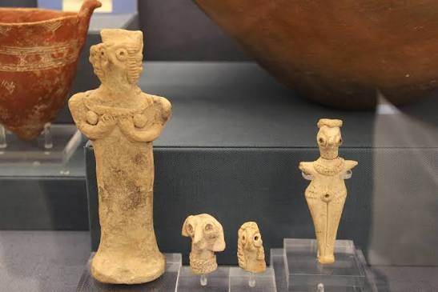
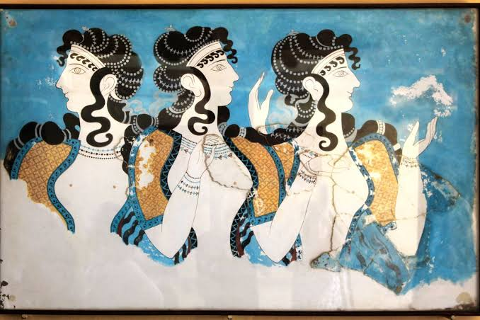

Art
Art & Sculptures
ART & SCULPTURES
Art played an important role in the culture and daily life of Bronze Age Greece, reflecting religion, nature, people, animals, and important social activities. Minoan and Mycenaean artists created beautiful works using materials such as clay, stone, bronze, gold, ivory, and precious stones. Their art appeared on pottery, jewelry, weapons, seals, frescoes, and other everyday objects.

Minoan art is especially known for its colorful frescoes depicting plants, animals, sea life, dancing, and religious ceremonies, while Mycenaean art often featured warriors, hunting scenes, geometric patterns, and religious symbols.
Sculptures and figurines were also created, often representing people, animals, or possible gods and religious figures. Together, these artworks provide valuable evidence about the beliefs, traditions, environment, and everyday life of Bronze Age Greek societies.
SCULPTURES

Sculptures
The production of figurines in the Aegean islands during the Bronze Age includes anthropomorphic and zoomorphic figurines made of clay, bone, shells and stone, mainly marble. Their discovery in houses, graves and sanctuaries shows that these were not made only as works of art but as objects of a wide social-ideological content and symbolic-religious dimensions.
The marble figurines, mainly female figures, of the Early Cycladic period (3200-2000 BC), which are the diagnostic element of the so-called Cycladic culture are of great importance for the figurine manufacture of the Early Bronze Age. Some of these represent persons of the Cycladic society such as musicians, warriors and pregnant women. The size of other figurines (about 1,5 metres) indicate clearly that that the plastic art of large-sized figurines was born in the Aegean, in the small Cyclades. In the other islands the manufacture of figurines is extremely restricted, in contradiction to the rich and inspired figurines of the Neolithic period (6800-3200 BC). Toward the Late Bronze Age large clay, handmade or wheelmade figurines from the sanctuaries of the Late Cycladic towns of Agia Irini and Phylakopi as well as smaller Fi and Psi type figurines which observe strictly the figurine manufacture of Mycenaean Greece are distinguished.
The zoomorphic Early Cycladic figurines are made mainly of marble or clay and represent animals and birds. At the same time, clay zoomorphic vases of a ritual character (e.g. hedgehog) occur frequently. During the Late Cycladic period figurines representing goat, sheep, cattle, etc. are made according to the Mycenaean models and bear painted decoration.
ART

Art
Fresco painting became an important form of art in the Aegean during the Late Bronze Age. Some of the earliest examples have been found at Phylakopi, while the richest and best-preserved collection comes from Akrotiri on the island of Thera (Santorini). The frescoes decorated important rooms inside buildings and often covered large areas of the walls. Their subjects included people, animals, plants, landscapes, ships, and religious scenes, giving us valuable information about Bronze Age life and culture.
The artists of Akrotiri mainly used the fresco technique, painting onto wet plaster, although some areas were painted after the plaster had dried. Natural mineral and plant materials were used to create colors such as white, black, red, blue, and yellow. The artwork shows influences from Minoan Crete, while also displaying distinctive Cycladic features.
Many of the frescoes had religious themes, showing figures participating in ceremonies or appearing alongside religious symbols. Other paintings depicted everyday and secular scenes. One famous example, the Flotilla Fresco from the West House, shows ships traveling toward a coastal settlement and provides a fascinating glimpse into maritime life. Together, the well-preserved frescoes of Akrotiri offer valuable evidence about the art, religion, environment, travel, and everyday life of people during the Bronze Age.